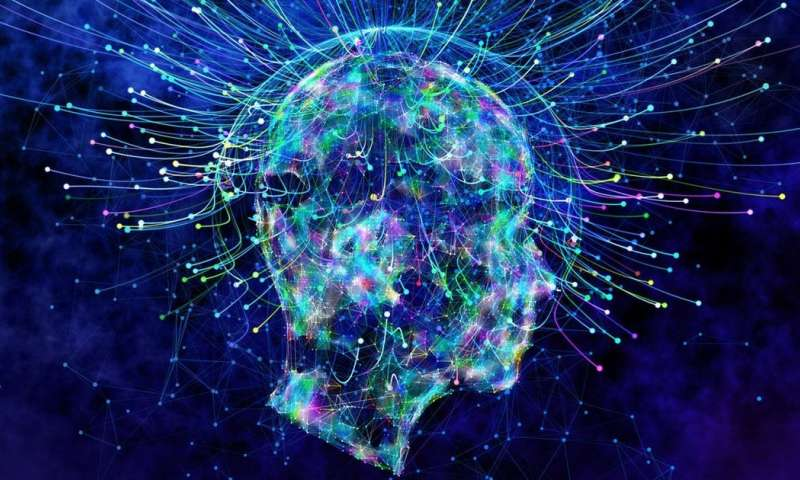

16 OCT 2017 - 12:34
Right now, billions of neurons in your brain are working together to generate a conscious experience – not just any conscious experience, but your own experience of the world around you and of yourself within it. So how does this actually happen?
According to neuroscientist, Anil Seth, we’re all hallucinating all of the time. And when we agree about our hallucinations, we call it ‘reality’. So how can we understand this ‘reality’ of consciousness better?
As with life, so with consciousness, once we start explaining its properties in terms of things happening inside brains and bodies the apparent insolubility of what consciousness is, starts to fade away.
Understanding the biological basis of conscious experience is one of the great challenges for 21st century science. This fabulously mind blowing, disorienting talk may leave you questioning the very nature of your existence.
Everyone knows what it feels like to have consciousness: it's that self-evident sense of personal awareness, which gives us a feeling of ownership and control over the thoughts, emotions and experiences that we have every day.
Most experts think that consciousness can be divided into two parts: the experience of consciousness (or personal awareness), and the contents of consciousness, which include things such as thoughts, beliefs, sensations, perceptions, intentions, memories and emotions.
It's easy to assume that these contents of consciousness are somehow chosen, caused or controlled by our personal awareness – after all, thoughts don't exist until until we think them. But in a new research paper in Frontiers of Psychology, we argue that this is a mistake.
We suggest that our personal awareness does not create, cause or choose our beliefs, feelings or perceptions. Instead, the contents of consciousness are generated "behind the scenes" by fast, efficient, non-conscious systems in our brains. All this happens without any interference from our personal awareness, which sits passively in the passenger seat while these processes occur.
Put simply, we don't consciously choose our thoughts or our feelings – we become aware of them.
Not just a suggestion
If this sounds strange, consider how effortlessly we regain consciousness each morning after losing it the night before; how thoughts and emotions – welcome or otherwise – arrive already formed in our minds; how the colours and shapes we see are constructed into meaningful objects or memorable faces without any effort or input from our conscious mind.
Consider that all the neuropsychological processes responsible for moving your body or using words to form sentences take place without involving your personal awareness. We believe that the processes responsible for generating the contents of consciousness do the same.
Our thinking has been influenced by research into neuropsychological and neuropsychiatric disorders, as well as more recent cognitive neuroscience studies using hypnosis. The studies using hypnosis show that a person's mood, thoughts and perceptions can be profoundly altered by suggestion.
In such studies, participants go through a hypnosis induction procedure, to help them to enter a mentally focused and absorbed state. Then, suggestions are made to change their perceptions and experiences.
For example, in one study, researchers recorded the brain activity of participants when they raised their arm intentionally, when it was lifted by a pulley, and when it moved in response to a hypnotic suggestion that it was being lifted by a pulley.
Similar areas of the brain were active during the involuntary and the suggested "alien" movement, while brain activity for the intentional action was different. So, hypnotic suggestion can be seen as a means of communicating an idea or belief that, when accepted, has the power to alter a person's perceptions or behaviour.
The personal narrative
All this may leave one wondering where our thoughts, emotions and perceptions actually come from. We argue that the contents of consciousness are a subset of the experiences, emotions, thoughts and beliefs that are generated by non-conscious processes within our brains.
This subset takes the form of a personal narrative, which is constantly being updated. The personal narrative exists in parallel with our personal awareness, but the latter has no influence over the former.
The personal narrative is important because it provides information to be stored in your autobiographical memory (the story you tell yourself, about yourself), and gives human beings a way of communicating the things we have perceived and experienced to others.
This, in turn, allows us to generate survival strategies; for example, by learning to predict other people's behaviour. Interpersonal skills like this underpin the development of social and cultural structures, which have promoted the survival of human kind for millennia.
So, we argue that it is the ability to communicate the contents of one's personal narrative –– and not personal awareness – that gives humans their unique evolutionary advantage.
What's the point?
If the experience of consciousness does not confer any particular advantage, it's not clear what it's purpose is. But as a passive accompaniment to non-conscious processes, we don't think that the phenomena of personal awareness has a purpose, in much the same way that rainbows do not. Rainbows simply result from the reflection, refraction and dispersion of sunlight through water droplets – none of which serves any particular purpose.
Our conclusions also raise questions about the notions of free will and personal responsibility. If our personal awareness does not control the contents of the personal narrative which reflects our thoughts, feelings, emotions, actions and decisions, then perhaps we should not be held responsible for them.
In response to this, we argue that free will and personal responsibility are notions that have been constructed by society. As such, they are built into the way we see and understand ourselves as individuals, and as a species. Because of this, they are represented within the non-conscious processes that create our personal narratives, and in the way we communicate those narratives to others.
Just because consciousness has been placed in the passenger seat, does not mean we need to dispense with important everyday notions such as free will and personal responsibility. In fact, they are embedded in the workings of our non-conscious brain systems. They have a powerful purpose in society and have a deep impact on the way we understand ourselves.